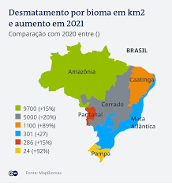

O desmatamento é caracterizado pela remoção da vegetação nativa de uma área. A sua causa está atrelada principalmente à ação antrópica, ou seja, à atuação do homem no desenvolvimento das atividades produtivas. As consequências do desmatamento estão ligadas à perda da biodiversidade e, consequentemente, à extinção de espécies. Além disso, o desmate provoca um amplo conjunto de impactos ambientais negativos e é apontado como um dos grandes responsáveis pelas mudanças climáticas. O desmatamento é um fenômeno mundial. No entanto, o maior volume de ocorrências de desmate está nos países subdesenvolvidos e emergentes. No Brasil, o bioma mais atingido pelo desmatamento na atualidade é a Amazônia. O Cerrado é o segundo bioma brasileiro mais devastado. Já a Mata Atlântica foi amplamente destruída ao longo dos séculos, sendo que atualmente restam menos de 13% da vegetação originária desse bioma. Esse cenário de devastação requer políticas preservacionistas a fim de proteger-se os recursos naturais. Desse modo, uma solução é a implementação de modelos de produção de cunho sustentável voltados para o desenvolvimento econômico em conjunto com a preservação ambiental.
